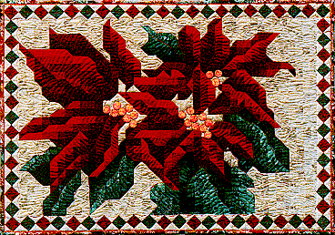

Poinsettia Mosaic Poinsettia Mosaic
Poinsettia Mosaic Poinsettia Mosaic
| #P116..........$7.95 45" X 31" I've always loved poinsettias! They add such a festive note for the holidays. Now while I love flowers, I'm not always that good at growing them. Have you ever saved your poinsettias and tried to get them to bloom for the next year? Well, I have and I've never gotten them to bloom again. But with this quilt I'll have poinsettias blooming at my house every year! And you can too! | 
|